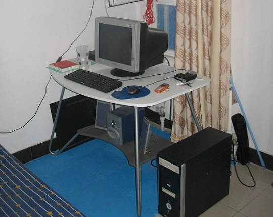

最近在换住处，真的快，又一年了。当年在回龙观和朝阳区之间跑来跑去的日子，似乎也过去不远，但想起来还是有点沧桑感。回龙观的田园鸡真好吃，当时离开前的那天晚上，和晓禾同学在外面路边吃的麻辣烫，也很舒适。回龙观的街很宽，很少车，很少人。 接下来的一年在蓟门桥，倒是方便了许多，骑车上班，不用受北京的破交通之苦，在路上好不快活，舍不得骑那么快，后来都是推着走的。而且和大学同学住一起，晚上一个人回去不至于显得太凄凉。可惜离学校那么近，都没回去踢过几次球。 现在又搬到北理这边，感觉总是这几个地方转，循循环环。这里住的比以前好，可比以前贵多了。不过倒是终于能两个人住一起了，省去了周末奔波的路途之苦。多付出点也是值得的吧。 北漂一族就是这样的漂来漂去，有时想想那个住了那么久的地方，也是有点留恋。每次搬到一个新的地方，总是有许多的期待，想把房子布置得好一点，想想周边有什么地方又经济又实惠……虽然想的许多最后都没有实施，但总给我们带来过期望。生活有些期待是好的，不然活着还有什么生气呢？ [caption id=”” align=”aligncenter” width=”600”] 将近两年前刚住进去的回龙观宿舍[/caption] [caption id=”” align=”aligncenter” width=”600”] 刚入住的蓟门桥房子[/caption]
刚入住的蓟门桥房子[/caption]